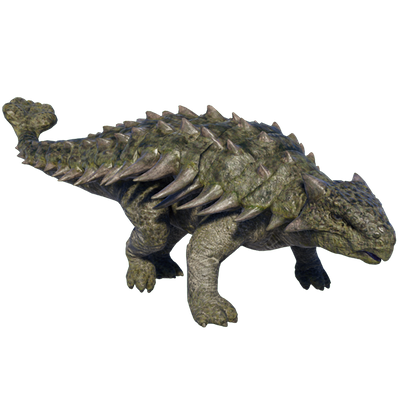

Useful Website
Famed for its clubbed tail and the armour plates that cover its back, Ankylosaurus is a genus of Ankylosaurus that lived around 70m years ago during the Late Cretaceous period. Ankylosaurus’ protective osteoderms and robust build – the average specimen weighs 8 tonnes and is 9.6m in length - defend it from predators such as Tyrannosaurus rex, while its large stomach digested up to 60kg of ferns and shrubs every day.
